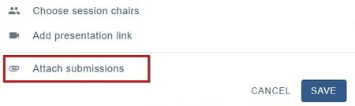
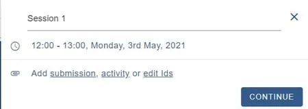
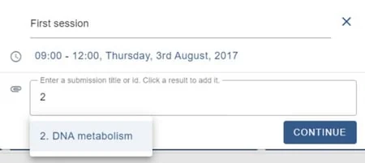
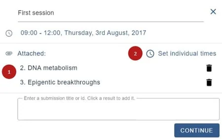
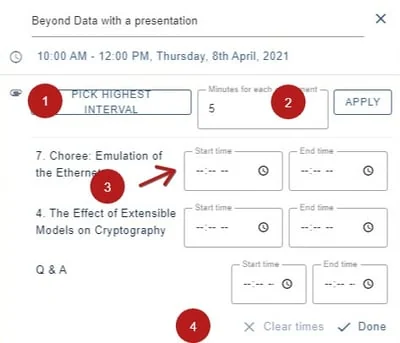
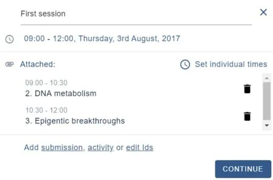
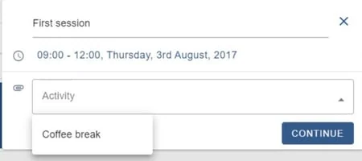
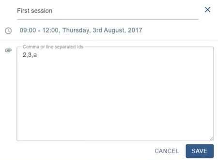

Attaching content to sessions
For event organisersNot an organiser?
Attach content that you have collected in the submission form, eg. posters, abstracts or links to live (Zoom, Google Meet etc.) or on-demand (Youtube or Vimeo etc.) content. You can also add activities such as Q&A sessions, and coffee breaks.#
Go to Event dashboard → Conference → Builder
Click on a session. At the bottom of the panel, you will see Attach submissions

NB: If you have the Symposia module, you will see an option for Attaching symposia which works in the same way as attaching submissions.
Choose submission, activity or edit ids
Submission: Information collected from the submission form. You can set Individual times, should you wish.
Activity: eg, coffee breaks and Q&A sessions. (See Setting up your program - program configuration for setting these up.)
Edit Ids: For editing the submission IDs added in the Submission option.

Submissions
As you begin typing in the field, options are suggested. Click on your choses options to add to the session.

Once you have 1) added your choices, you can either click Continue to move to the next stage, or 2) Set individual times for each submission.

Setting individual times
You can then choose to
1) Pick highest interval, which will distribute the time of the session into equal slots, and click Apply.
2) Schedule automatically by entering a time interval in minutes, then clickApply
3) Enter specific times
4) This will clear all entered data.
Once you have set your times, click Done. 
Please note: Changing the session time does not update the individual time.
Click Continue to return to the session panel.

Adding activities
Before you add an activity, you will need to set them up. (See Setting up your program - program configuration for setting these up.) Once you have done so, just click on the chosen activity. Click continue to return to the session panel.

Edit IDs
Clicking on Edit IDs will allow you to manually add, delete or change the order of submissions / activities.

Didn't solve it? Ask our support team
No question is too small, and there's no charge for asking. Raise a ticket and someone who knows the software will pick it up.
Did this page solve it?
Thanks — this helps us fix it.